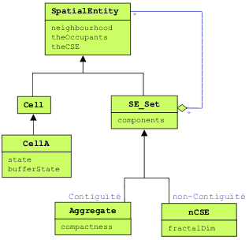

|
TSE
Test des entités spatiales agrégatives de Cormas
Christophe Le Page, Cirad

Ce modèle illustre les principes d'utilisation des
entités spatiales agrégatives de Cormas. Dans l'arbre
d'héritage des entités spatiales génériques de Cormas,
l'entité spatiale composée "SpatialEntity_Set" se
spécialise en :
- "SpatialEntity_Aggregate", dont les composants
respectent une contrainte de contiguïté
- "SpatialEntity_Set_notConnex", dont les composants
peuvent être disjoints.
Les opérations d'agrégation-désagrégation sont
réalisées à partir des deux attributs "components" (une
collection d'entités spatiales de niveau hiérarchique
inférieur) et "theCSE" (un registre d'appartenance à des
entités spatiales de niveaux supérieurs).
Le modèle TSE permet de tester deux façons de créer des
agrégats avec Cormas.
La première consiste à définir les composantes comme
des ensembles de cellules contigües partageant une même
condition. On commence par charger une grille de 50*50
cellules de type "TSE_Cell" dont l'attribut "context"
est soit #forest (condition d'agrégation), soit #empty.
La création des entités spatiales composées
"TSE_Aggregate" est soumise à une contrainte
supplémentaire sur le nombre minimum (fixé à 25) de
composants contigüs vérifiant la condition d'agrégation.
Faire co-exister dans le même modèle des entités
spatiales définies à différents niveaux offre une grande
souplesse pour écrire les méthodes de dynamique de la
végétation. Certains processus seront plus facilement
décrits au niveau cellulaire, d'autres au niveau agrégé.
Ainsi, dans cet exemple théorique simpliste, chaque
cellule a une probabilité fixée (très faible) de changer
de contexte. Une dynamique d'expansion par la lisière
est écrite (au niveau agrégé) de la façon suivante: un
certain nombre (correspondant au centième du total des
cellules composants l'entité forestière) de cellules en
lisière vont être intégrées à la forêt. Dans le but de
garder une certaine compacité aux entités forestières,
on choisit en priorité les cellules de la lisière qui
sont entourées du plus grand nombre de cellules déjà
agrégées.
La seconde consiste à partir de 10 cellules "graines",
et à créer autant d'agrégats initialement constitués
d'un seul composant: une graine. Le processus itératif
de construction des agrégats repose sur l'intégration,
parmi les cellules en lisière, de toutes celles qui
n'appartiennent pas encore à un autre agrégat.
|